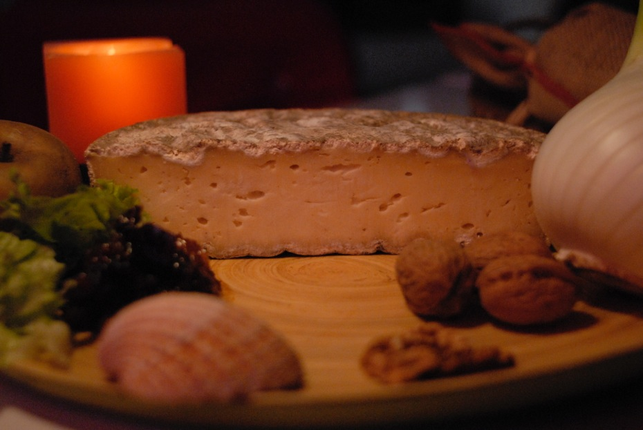

Depuis six générations, notre famille a fait un art de la production de lait de qualité. Elle a su tirer parti des terres et du climat du Vaumadeuc qui sont particulièrement adaptés à l’élevage des vaches laitières.
Il y a près de 30 ans, nous avons décidé de valoriser le trésor du lait du Vaumadeuc.
Pour le fromage, nous sommes allés chercher les meilleures techniques dans les meilleures régions fromagères de France.
Le lait au détail, notre délicieuse crème, le fromage frais, la faisselle et surtout la Tomme-du-Vaumadeuc et le Val-Doré ont garni notre étal à la ferme et sur les marchés locaux.
Les « accros de nos produits » se multiplient, dans la région et même bien au-delà grâce aux clients saisonniers qui nous sont fidèles et qui communiquent notre réputation.
En 20--, c’est auprès du plus célèbre glacier parisien que nous avons trouvé les recettes de nos crèmes glacées aux parfums naturels. Dès que nous les avons proposées, nos glaces ont eu un immense succès.
Et voilà qu’en 2015, nous ajoutons un fromage différent. Notre dernier-né est le Grand-Madeuc. Venez vite l’essayer ! Il mérite bien de figurer parmi les grands.
À bientôt,
Marie-Paule et Jean-François Lévêque
Faire connaissance